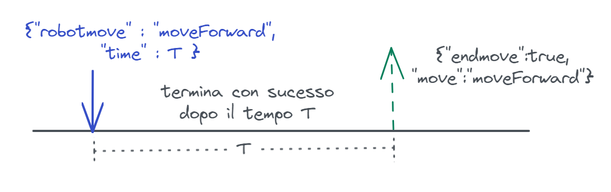
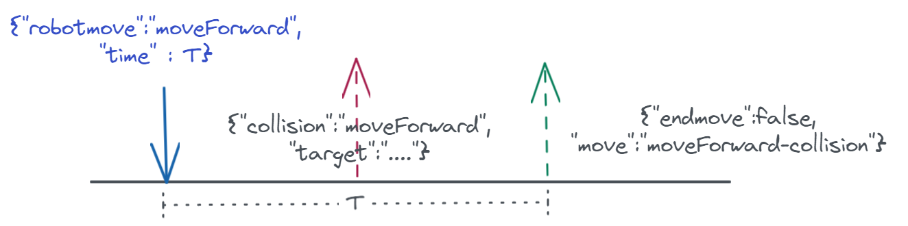

Applicazione1-WS¶
In questa sezione vogliamo realizzare le interazioni tra
Application1CoreConn
e VirtualRobot23 utilizzando le WebSocket.
{kind=link}
Applicazione1-WS: analisi del problema¶
Impostare un modo di Interazione asincrona con il VirtualRobot23 significa inviare comandi
in modo fire-and-forget e ottenere informazioni sul loro esito attraverso un Messaggio di stato
che WEnv invia a tutti i client connessi.
Il progetto unibo.basicomm23 definisce la classe WsConnection, che offre all’application designer strumenti e meccanismi utili a gestire questa nuova situazione.
Supporto per robot via WS¶
Per rendere la struttura dell’applicazione simile a quella di unibo.appl1.interaction.Application1CoreConn, introduciamo la classe unibo.supports.VrobotHLMovesWS.
unibo.supports.VrobotHLMovesWS¶
Questa classe realizza le mosse di alto livello
del robot introdotte in unibo.common.IVrobotMoves, avvalendosi delle comunicazioni di basso livello
sulla WS, realizzate da WsConnection.
Le mosse hanno tutte una durata limitata, ma le interazioni sono di tipo asincrono e per sapere quando una mossa
è terminata occorre gestire il Messaggio di stato inviato sulla WS da WEnv.
A tal fine VrobotHLMovesWS estende ApplAbstractObserver e si registra come osservatore sulla WsConnection.
public class VrobotHLMovesWS extends ApplAbstractObserver implements IVrobotMoves{
private Interaction2021 wsCommSupport;
protected int elapsed = 0; //modified by update
public VrobotHLMovesWS( String hostIp ) {
wsCommSupport = new VrobotWsComms(hostIp, 8091, obs );
wsCommSupport.addObserver( this );
}
La mossa halt viene realizzata in modo asincrono, senza attendere alcun messaggio di terminazione (che non viene inviato) ma solo un tempo adeguato al completamento della mossa.
@Override
public void halt( ) throws Exception {
wsCommSupport.forward(VrobotMsgs.haltcmd);
CommUtils.delay(30); //wait for completion
}
Le altre mosse ad alto livello del robot sono realizzate ancora in modo sincrono, usando una operazione locale request bloccante.
@Override
public void turnLeft() throws Exception {
request(VrobotMsgs.turnleftcmd);
}
@Override
public void turnRight() throws Exception {
request( VrobotMsgs.turnrightcmd );
}
@Override
public void forward(int time) throws Exception {
String result = request(VrobotMsgs.forwardcmd.replace("TIME",""+time));
if( result.contains("collision") ) throw new Exception("forward failed");
}
@Override
public void backward(int time) throws Exception {
String result = request(VrobotMsgs.backwardcmd.replace("TIME",""+time));
if( result.contains("collision") ) throw new Exception("backward failed");
}
@Override
public boolean step(int time) throws Exception {
String cmd = VrobotMsgs.forwardcmd.replace("TIME", ""+time);
String result = request( cmd );
return result.equals("true");
}
VrobotHLMovesWS.request¶
L’operazione request bloccante opera in due fasi:
la prima fase invia il messaggio di richiesta su
WS, invocando l’operazioneforward(String)di WsConnection;la seconda fase consiste nell’attesa di modifica della variabile locale
moveResultdalla parte che realizza VrobotHLMovesWS come observer.
private String moveResult = null;
public String request(String msg) throws Exception {
moveResult = null;
startTimer();
wsCommSupport.forward(msg); //FASE1
synchronized(this) {
while( moveResult == null ) { wait(); } //FASE2
return moveResult;
}
}
Dunque request blocca il chiamante fino a che WEnv invia un Messaggio di stato (gestito da VrobotHLMovesWS.update) che segnala successo o fallimento (collisione).
In questo modo una mossa di durata T che termina con successo ha un tempo di esecuzione T. Nel caso di
fallimento, le mosse forward e backward generano una eccezione appena la collisione viene
perceipta, mentre step restituisce il valore false dopo il tempo T.
Più avanti (sezione Step asincrono con callback) vedremo come la interazione asincorna potrà indurre a impostare il funnzionamento di step in modo diverso.
VrobotHLMovesWS come observer¶
La parte che opera come osservatore è realizzata dal metodo update(String), che viene invocato dal supporto
WsConnection (in quanto IObservable)
quando WEnv trasmette su WS l’esito del comando (o un Messaggio di stato).
Questa parte di codice gestisce i messaggi di fine movimento del robot, aggiornando la variabile moveResult
che sblocca la VrobotHLMovesWS.request in attesa.
|  | mossa che termina con successo |
|  | mossa che fallisce, provocando una collisione. Il messaggio collision viene ricevuto da update, ma non viene gestito a livello applicativo. |
VrobotHLMovesWS.update¶
@Override
public void update(String info) {
try {
elapsed = getDuration();
JSONObject jsonObj = CommUtils.parseForJson(info);
if( jsonObj == null ){
CommUtils.outred("VrobotHLMovesWS | update ERROR Json:" + info);
return;
}
if( info.contains("_notallowed") ){
CommUtils.outred("VrobotHLMovesWS |
update WARNING!!! _notallowed unexpected in " + info);
return;
}
if (jsonObj.get("collision") != null) {
//Non faccio nulla: attendo moveForward-collision
return;
}
if (jsonObj.get("endmove") != null) {
//{"endmove":"true/false ","move":"..."}
boolean endmove = jsonObj.get("endmove").toString().equals("true");
String move = jsonObj.get("move").toString();
synchronized(this) {
moveResult = "" + endmove;
notifyAll();
}
return;
}
} catch (Exception e) { ... }
}
}
Vediamo ora come impostare una soluzione dell’Applicazione1 su queste premesse, tenendo anche conto cha abbiamo già definito una classe astratta unibo.appl1.common.Application1AbstractBase che implementa IApplication1.
unibo.ws.Application1Ws¶
Dichiariamo le variabili locali che useremo nell’applicazione.
public class Application1Ws extends Application1AbstractBase{
protected static final boolean fast = false;
protected int stepTIme = 0;
protected int NEdges = 0;
protected int NSteps = 0;
protected IVrobotMoves vr ;
vr: deve referenziare un oggetto di supporto VrobotHLMovesWS per eseguire le operazioni di alto livello del robot.NEdges: numero di lati percorsi.NSteps: numero di passi effettuati.
unibo.ws.Application1Ws: il costruttore¶
public Application1Ws( String hostIp ){
this( hostIp, new Vector<IObserver>() );
}
public Application1Ws( String hostIp, Vector<IObserver> externalObs ){
super("Application1Ws", hostIp, fastPc, externalObs);
vr = VrobotHLSupportFactory.supportForWS(hostIp);
stepTIme = fastPc ? 300 : 500;
}
Il codice applicativo che realizza la business-logic con interazione su
WebSocket è simile al caso basato su HTTP Application1CoreConn,
a sua volta simile a Application1Core.
unibo.ws.Application1Ws: walkAtBoundary¶
public void walkAtBoundary() throws Exception {
CommUtils.waitTheUser("PUT ROBOT at HOME and hit to start");
started = true;
updateObservers("robot-athomebegin");
for( int i=1; i<=4;i++) {
walkAheadUntilCollision(i);
vr.turnLeft();
}
started = false;
updateObservers("robot-athomeend");
}
unibo.ws.Application1Ws: walkAheadUntilCollision¶
protected void walkAheadUntilCollision(int n) throws Exception {
boolean stepOk = true;
while( stepOk ) {
updateObservers("robot-moving");
NEdges += 1;
stepOk = vr.step(stepTime);
if( ! stepOk ) updateObservers("robot-collision");
else updateObservers("robot-stable");
CommUtils.delay(300); //to view the steps better
if( stopped ) {
updateObservers("robot-stopped");
waitResume();
}
}
return;
}
unibo.ws.Application1Ws: main¶
public static void main( String[] args ) throws Exception {
Application1Ws appl = new Application1Ws( "localhost" );
appl.start();
}
ObserverForTestingAppl1¶
Definiamo un observer utile in fase di testing automatizzato dell’applicazione.
public class ObserverForTestingAppl1 extends ApplAbstractObserver {
private boolean applIsTerminated = false;
private Vector<String> history = new Vector<String>();
@Override
public void update(String message) {
history.add(message);
if( message.equals("robot-athomeend")) setTerminated();
}
//permette di riusare un observer in fase di testing
public void init(){
history = new Vector<String>();
applIsTerminated = false;
}
public Vector<String> getHistory(){
return history;
}
private synchronized void setTerminated(){
CommUtils.outblue(" ObserverForTesting | appl terminated " );
applIsTerminated =true;
notifyAll();
}
public synchronized void waitApplTerminated(){
while( ! applIsTerminated ) {
try {
wait();
} catch (InterruptedException e) {...}
}
}
}
Step asincrono con callback¶
L’idea di step asincrono con callback consiste nel pensare che siano definite le azioni
da svolgere nel caso di step che termina con sucesso (stepok)
e di step che fallisce per via di una collisione (stepfail).
Il compito ell’operazione:
public void stepAsynch(int time, IWsInfoHandler stepok, IWsInfoHandler stepfail )
è di eseguire uno step e invocare stepok oppure stepfail a seconda dell’esito del comando.
Questo modo di interazione può condurre all’inferno delle callback
Introduciamo dunque un’interfaccia che stabilisce l’azione da compiere per la gestione di un Messaggio di stato.
unibo.appl1.common.IWsInfoHandler¶
public interface IWsInfoHandler {
public void handle(String msg) ;
}
VrobotHLMovesWS.stepAsynch¶
L’operazione stepAsynch invoca, usando request, l’operazione asincrona
forwardsu WsConnection. Se request restituscetrue, stepAsynch invoca la callbackstepok, altrimenti invocastepfailLa inovazione mediante request viene eseguita all’interno di un nuovo Thread
ThSper evitare il blocco del chiamante.Per meglio comprendere il funzionamento, stepAsynch tiene traccai dei teni di esecuzione.
public void stepAsynch(int time, IWsInfoHandler stepok, IWsInfoHandler stepko ) {
new Thread(){
public void run(){
try {
startTimer();
long startTime = System.currentTimeMillis();
String result = request(VrobotMsgs.forwardcmd.replace("TIME",""+time));
long elapsed = System.currentTimeMillis() - startTime;
if (result.contains("true")) stepok.handle("w ok duration:" + elapsed);
else stepko.handle(result + " duration:" + elapsed);
}catch(Exception e){ stepko.handle("step error:" + e.getMessage()); }
}
}.start();
}
Soluzione con stepAsynch¶
Iniziamo impostando le azioni da svolgere nel caso di step che termina con sucesso e di step che fallisce per via di una collisione.
IWsInfoHandler stepok = (msg -> {
CommUtils.outblue(msg);
NSteps++;
CommUtils.delay(300); //to view steps better
doWalkingstep();
});
IWsInfoHandler stepfail = (msg -> {
try{
vr.halt(); //to avoid turnLeft_notallowed
NEdges += 1;
vr.turnLeft();
if( NEdges < 4 ) doWalkingstep();
}catch(Exception e){ e.printStackTrace();}
});
protected void doWalkingstep( ) {
if( stopped ) waitResume();
((VrobotHLMovesWS)vr).stepAsynch( stepTIme, stepok, stepfail);
}
A questo punto inneschiamo il procedimento invocando l’operazione doWalkingstep che effettua il primo step.
public void doJob() throws Exception{
doWalkingstep();
}
Uso di annotazioni¶
Definizione delle annotazioni¶
@Retention(RetentionPolicy.RUNTIME)
@Target(value=METHOD)
public @interface StepOk { }
@Retention(RetentionPolicy.RUNTIME)
@Target(value=METHOD)
public @interface StepFail {}
In Application1AbstractBase¶
In Application1AbstractBase introduciamo una utility scanMethodAnnotation
(da invocare nel costruttore) per individuare e memorizzare i metodi annotati entro la classe (specializzata).
protected Method stepOk;
protected Method stepFail;
public Application1AbstractBase(String name, String hostIp,
boolean fastPc, Vector<IObserver> externalObs){
...
scanMethodAnnotation( );
}
public void scanMethodAnnotation( ) {
Method[] m = this.getClass().getDeclaredMethods();
for (int i = 0; i < m.length; i++) {
if (m[i].isAnnotationPresent(StepOk.class)) { stepOk = m[i]; }
if (m[i].isAnnotationPresent(StepFail.class)) { stepFail = m[i]; }
}
}
Application1WsAnnot¶
Nella nuova versione dell’applicazione (unibo.appl1.ws.Application1WsAnnot) definiamo i metodi annotati
che corrispondono alla esecuzione di uno step con successo e con fallimento.
public class Application1WsAnnot extends Application1AbstractBase {
...
@StepOk
protected void stepOk(String msg){
NSteps++;
doWalkingstep();
}
@StepFail
protected void stepfail(String msg){
try{
vr.halt(); //to avoid turnLeft_notallowed
NEdges += 1;
vr.turnLeft();
if( NEdges < 4 ) doWalkingstep();
}catch(Exception e){ ... }
}
Nella applicazione definiamo anche un metodo che effettua uno step invocando request e l’oppoprtuno metodo annotato a seconda del risultato.
protected void doWalkingstep( ) {
if( stopped ) waitResume();
dostepAsynchWithAnnot( stepTIme );
}
public void dostepAsynchWithAnnot( int time ) {
try {
long startTime = System.currentTimeMillis();
String result = ((VrobotHLMovesWS)vr).request(
VrobotMsgs.forwardcmd.replace("TIME",""+time));
long elapsed = System.currentTimeMillis() - startTime;
if (result.contains("true")) stepOk.invoke(this, "w ok duration:" + elapsed);
else stepFail.invoke(this, " duration:" + elapsed);
}catch(Exception e){ e.printStackTrace(); }
}